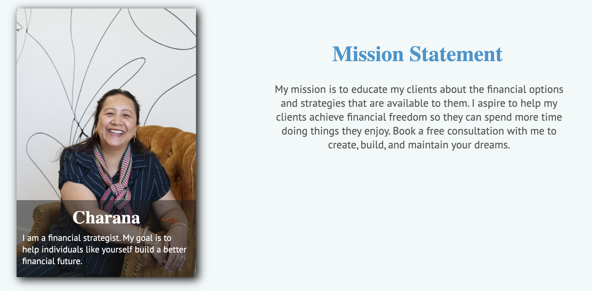

Project Preview

Project Case Study
A client-facing financial brand website delivered through a cross-functional team, focused on clarity, trust, and practical business value.
The site was built to support a financial advisor’s online presence, communicate services clearly, and present a professional experience for prospective clients.
I worked in a six-person team with designers and developers, coordinating implementation details with regular client check-ins to keep delivery aligned.
The project ran across a full semester with iterative planning, feedback loops, and phased releases.